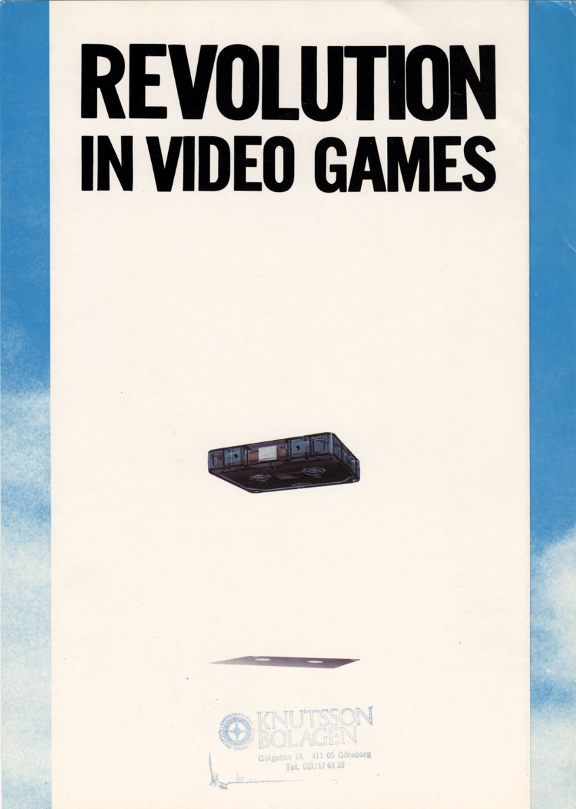
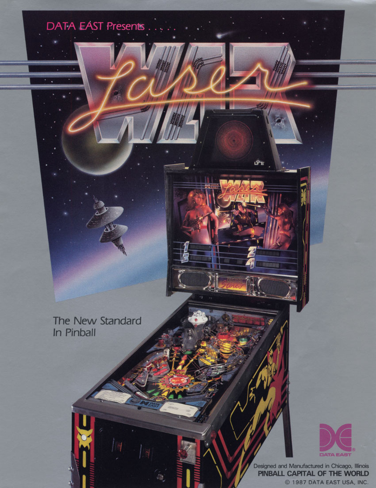
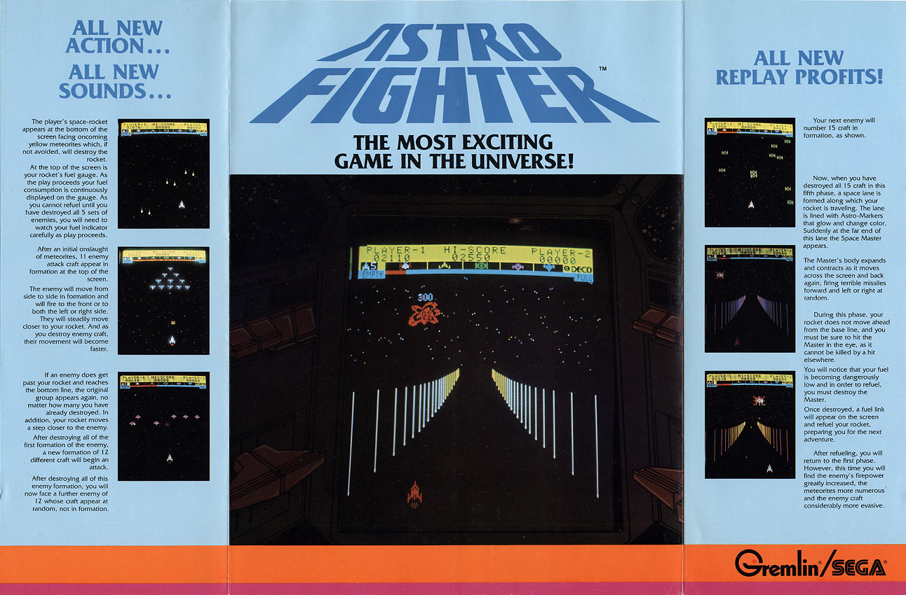
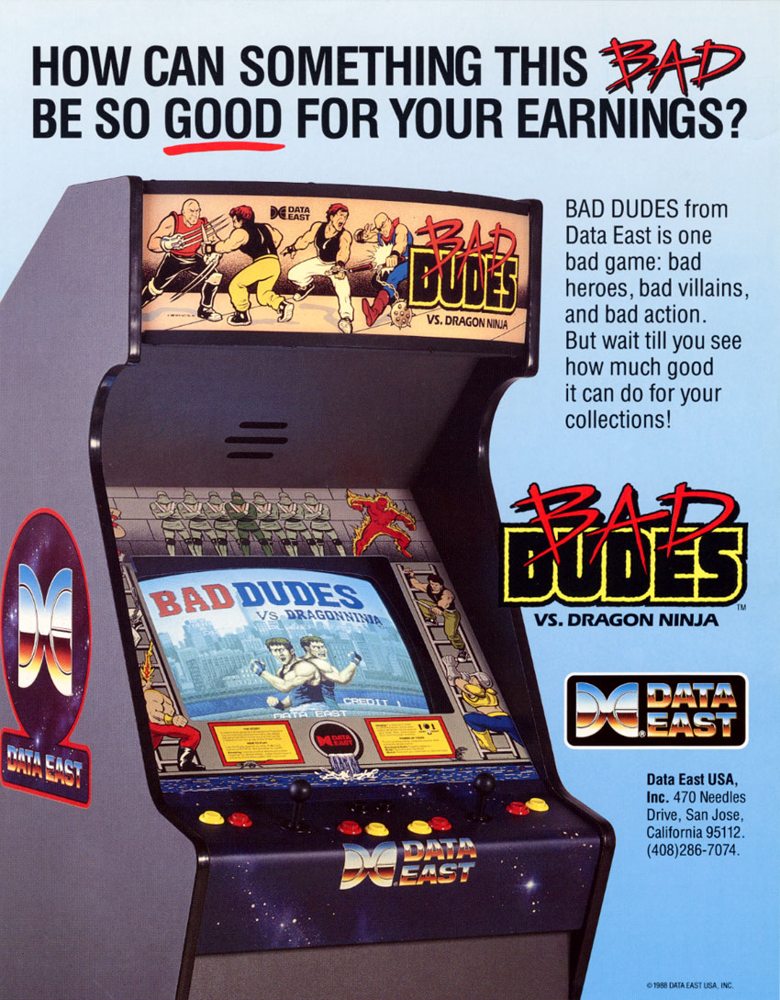
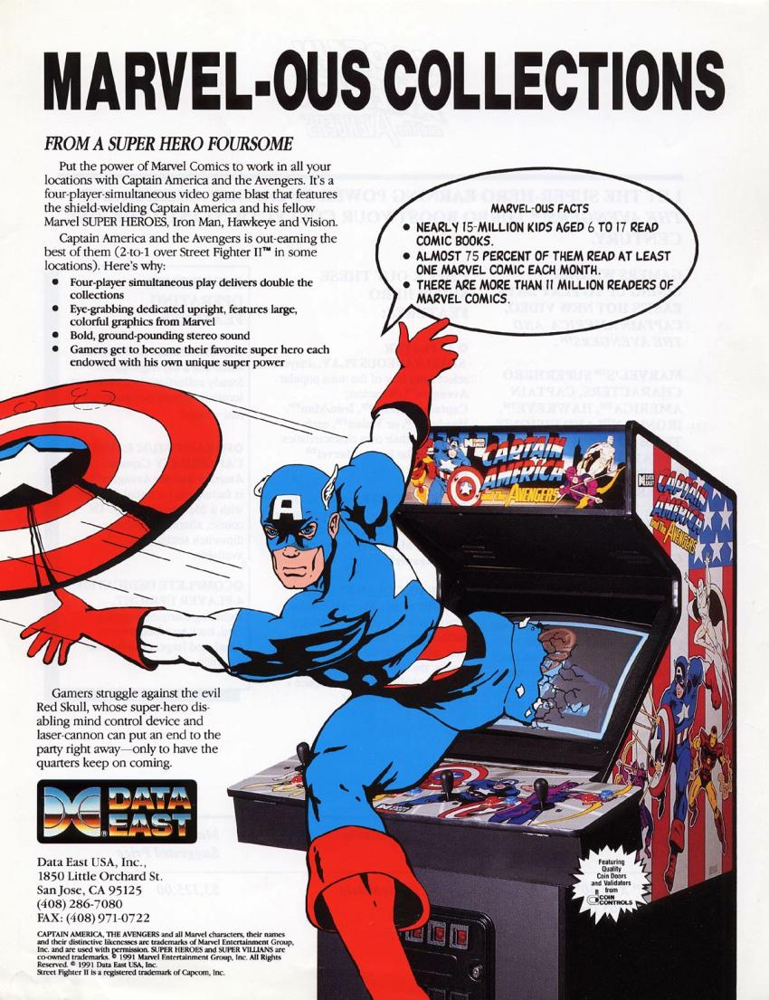
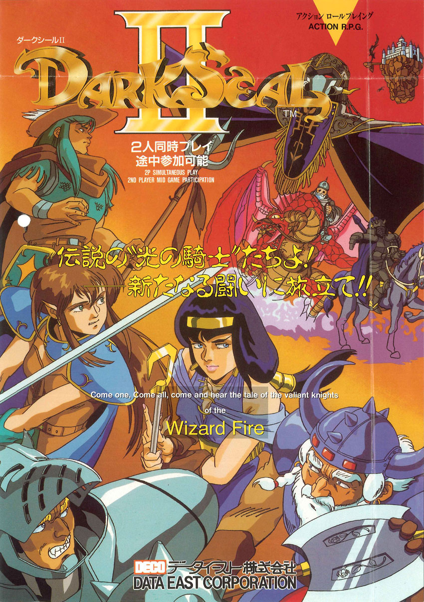

COMPANY SNAPSHOT
Founded: Apr 20, 1976 by engineer Tetsuo Fukuda in Tokyo, Japan.
Defunct: Jun 25, 2003 after a Tokyo District Court bankruptcy declaration.
Headquarters: Suginami, Tokyo. Contemporary records show multiple Ogikubo-area offices whose functions shifted over time; do not reduce the history to one permanent street address.
U.S. subsidiary: Data East USA established June 1979. Verified address trail: 470 Gianni Street, Santa Clara (documented 1982) → 470 Needles Drive, San Jose (mid-to-late 1980s) → 1850 Little Orchard Street, San Jose (1990s). U.S. office closed around Christmas 1996; exact legal liquidation date remains open.
Confirmed arcade-video output count: 128 unique commercially released Data East-developed or substantially co-developed conventional arcade-video game families under the project’s role-aware counting rule. Publisher-only/distributor-only titles, prototypes, redemption/medal/gambling/special-use products, pinball and duplicate regional/hardware variants are excluded.
Primary roles: arcade-video developer, hardware designer/manufacturer, publisher, licensor and distributor; later also active in consumer software and U.S. pinball.
INTRODUCTION — THE OVERLOOKED GIANT
Data East is easy to remember as a collection of individual hits, but the company makes more sense when viewed as a restless engineering and publishing organization that kept changing its approach to the arcade business. It experimented with interchangeable game media long before standardized cartridge systems became normal, moved through dedicated boards and laserdisc, built increasingly sophisticated custom hardware, used outside platforms when they made economic sense, and operated a substantial American pinball business alongside its video-game work.
That breadth also makes Data East unusually easy to miscount. Its name appeared on games it developed, games it published, games it licensed, games made by outside studios, regional versions, prototypes, and non-video amusement products. A useful company history therefore has to separate authorship from distribution and separate conventional arcade-video releases from the wider coin-operated business.
The result is a company that was both larger and stranger than a simple greatest-hits list suggests. Data East helped define several eras of arcade hardware, created distinctive original games, successfully handled major licensed properties, and remained active through repeated changes in the market. Its history is not one clean technological progression. It is a series of experiments, pivots, partnerships and reinventions held together by a remarkably persistent appetite for coin-operated entertainment.
FOUNDING AND EARLY YEARS
The U.S. division was established in June 1979. Astro Fighter became the company’s first major arcade success around 1979–1980, helping Data East establish itself beyond Japan.
The key early engineering gamble was the DECO Cassette System. Developed during 1979 and introduced commercially in 1980, it let operators retain the base hardware and swap games carried on cassette media with a security module. The concept anticipated later interchangeable arcade platforms, but cassette reliability, loading, and security-hardware problems ultimately limited it.
A 1986 Game Machine retrospective confirms Data East’s April 1976 establishment and Tetsuo Fukuda’s presidency. Later historical reporting states that by 1983 more than 35,000 DECO Cassette systems had been sold in Japan, Data East had roughly 75 game developers, four office buildings, R&D/administrative facilities, and its own manufacturing plant.
The bankruptcy date is now reconciled: contemporary Japanese reporting and a later Japanese court decision state that Data East filed its own bankruptcy petition in June 2003 and the Tokyo District Court issued the bankruptcy declaration later that month. Public notice followed in July. The commonly repeated July date is therefore a publication/public-awareness date, not the legal end date.
EXPANSION, OFFICES AND U.S. OPERATIONS
Data East’s corporate geography was more complicated than the simplified “one headquarters” story repeated in modern summaries. Contemporary Game Machine reporting from 1983 listed the head office at the Peace Ogikubo Building, 2-31-12 Kamiogi, Suginami-ku, Tokyo, while the R&D division occupied the Data East Building at 4-41-10 Minami-Ogikubo. The latter address became increasingly important: by 1986 Japanese and overseas trade directories were using 4-41-10 Minami-Ogikubo as Data East’s principal corporate/international address.
The company continued to reorganize its Suginami offices rather than remaining permanently in one building. In spring 1991, Game Machine reported that Data East moved its head office to the Daini Wako Building at 5-11-17 Ogikubo. It separately moved the domestic and overseas marketing divisions into the Minami-Ogikubo building where development was operating. This contemporary record shows that the common modern statement that Data East simply moved its headquarters to 4-41-10 Minami-Ogikubo in 1983 and stayed there for the rest of its life is too blunt. The surviving record is better understood as an Ogikubo/Suginami office cluster whose functions shifted among several buildings.
The U.S. operation likewise has a usable address trail. Data East’s American division had been established in 1979. Contemporary trade reporting in 1985 described Data East USA as a Santa Clara, California-based firm, while later company manuals and trademark filings document a San Jose base. During the mid-to-late 1980s, Data East USA used 470 Needles Drive, San Jose, California 95112. By 1990 the company had moved to 1850 Little Orchard Street, San Jose, California 95125, and that address remained in manuals, advertising and trademark records through at least 1995–1996.
The surviving primary record argues against an often-repeated claim that Data East USA relocated to Sunnyvale near the end of its life. No primary source found in this research places the company in Sunnyvale, while late-period records continue to identify 1850 Little Orchard Street in San Jose.
The American sales organization was expanding aggressively during Data East’s mid-1980s resurgence. Cash Box reported in 1985 that former Exidy executive John Barone had joined Data East USA as Western Sales Manager for the Leisure Electronics Division. The same report described Data East as having moved to the forefront of the video-game business during the preceding year on the strength of Karate Champ, Kung-Fu Master and Commando. These games must be described role-by-role rather than presented as three in-house Data East developments: Data East’s importance was not only as a developer but also as a North American publisher, licensee and distributor of successful outside-developed titles.
A major American diversification followed in pinball. Stern Pinball’s own corporate history states that Gary Stern helped found Data East Pinball in 1986 after the death of his father, Sam Stern. This is important because many later summaries loosely say that Data East “bought Stern Electronics.” Better evidence supports a more careful formulation: Data East Pinball was a newly formed operation led by Gary Stern and staffed by a number of former Stern people, while using facilities and assets associated with the old operation. It should not automatically be treated as a simple corporate continuation of Stern Electronics.
Data East Pinball grew into a major U.S. manufacturer. Its first production game was Laser War in 1987, and the operation went on to produce licensed machines including RoboCop, The Simpsons, Teenage Mutant Ninja Turtles, Star Wars, Jurassic Park and Guns N’ Roses. By 1994 it was described as the world’s second-largest pinball manufacturer. Sega announced an agreement to acquire the Chicago-area Data East Pinball business in August 1994; contemporary Los Angeles Times reporting described the acquisition as part of Sega’s attempt to broaden its amusement-machine line. The business subsequently became Sega Pinball and later, after another ownership change, Stern Pinball. This pinball lineage belongs in the company history but will remain separated from Data East USA’s California video-game operation.
The final years of Data East USA require one more careful distinction. The best-known account of its shutdown comes from GamePro in 1997, which is the source behind later descriptions of a recorded telephone message from marketing manager Jay Malpas saying the office had closed before Christmas 1996. Independent game credits confirm Malpas was Data East USA’s marketing manager and show Michael Meyers heading U.S. product development during the 1994–1996 period. The shutdown is therefore credible, but the exact legal liquidation date and any final corporate filing remain open questions.
U.S. OFFICE TRAIL
A contemporary 1982 Data East Inc. BurgerTime advertisement in Play Meter gives 470 Gianni Street, Santa Clara, California 95050. This confirms that the Santa Clara description used by contemporary trade reporting represented an actual earlier U.S. office, not merely regional shorthand. The verified chronology is 470 Gianni Street, Santa Clara (documented 1982) → 470 Needles Drive, San Jose (mid-to-late 1980s) → 1850 Little Orchard Street, San Jose (1990s). The exact move date from Gianni Street to Needles Drive remains open.
ARCADE HARDWARE EVOLUTION
Data East’s arcade hardware history should not be written as a tidy sequence of official “systems” in the way Sega or SNK marketed named platforms. The surviving boards and preservation documentation show something more improvisational. Data East repeatedly reused processors, graphics concepts, protection devices and custom ICs across related but non-identical PCBs, while also experimenting with removable media, laserdisc and outside platforms. Names such as “DEC8,” “DEC0,” “Rohga hardware” and even some “DECO32” groupings are useful modern preservation/emulation labels; they were not necessarily branded product families advertised to operators under those names.
THE DECO CASSETTE IDEA
The first major hardware statement was the DECO Cassette System. Contemporary Data East advertising sold it as “A Revolution in Video Games” and emphasized the operator economics: keep the cabinet assembly, replace the cassette and matching key module, fit the appropriate instruction panel and joystick restriction, and turn an aging game into a different title without buying another complete machine. A 1981 Play Meter advertisement promised more than ten original DECO games per year and even proposed licensing other Japanese makers’ games for cassette distribution.
MAME’s hardware documentation shows that the system was substantially more specialized than the word “cassette” suggests. The early 1980–1983 set used three active boards in a card cage, including a 6502-based audio board, a board with Data East’s “DECO CPU-3” custom device, and an I/O/cassette-control board. The custom cassette itself was roughly microcassette-sized but incompatible with an ordinary microcassette player. The tape stored synchronous serial data in blocks with headers and CRC checksums, and the region was encoded in the tape data. Later hardware revised the board set and used additional Data East-labeled custom devices.
The engineering concept was clever but the medium was the weakness. Game data had to be read from tape into RAM, so power-up involved a substantial loading delay and the operator depended on the mechanical cassette deck, tape and security hardware all behaving correctly. Data East continued the system into the mid-1980s, but it increasingly released games on conventional dedicated ROM boards as well. The long-term significance is less that cassette became the future than that Data East had identified an operator problem very early: arcade hardware was expensive, while software popularity could evaporate quickly.
DEDICATED BOARDS AND THE POST-CASSETTE TRANSITION
During the early 1980s Data East moved aggressively toward dedicated ROM hardware. Several popular titles associated with the cassette era also appeared in dedicated form, and related M6502-based Data East designs powered games such as Lock ’n Chase, BurgerTime, Bump ’n Jump, Disco No. 1, Zoar and others. These boards were not all one interchangeable platform. Rather, they demonstrate how Data East reused workable CPU, audio and graphics ideas while abandoning the cassette mechanism itself.
That distinction matters for the final game census. A cassette release and a dedicated-board release of the same underlying game should not automatically become two unique Data East arcade titles. Hardware variants belong in the technical record; the snapshot count needs to count games, not every physical board configuration.
THE LASERDISC BRANCH
Data East was also an early laserdisc experimenter. Bega’s Battle in 1983, Cobra Command/Thunder Storm in 1984 and Road Blaster/Road Avenger in 1985 combined conventional game logic and sprite generation with pre-recorded video. MAME documents multiple Cobra Command configurations: a Data East single-PCB version built around a Pioneer LD-V1000 player, a Data East three-board version related to the Bega’s Battle/Road Blaster design using a Sony LDP-1000, and a conversion-kit variation for other laserdisc hardware.
This was not a straight path toward the company’s later conventional boards. It was a branch—an attempt to use animated video as scenery and spectacle while game logic remained on conventional electronics. The surviving hardware record is particularly valuable because it shows Data East adapting to more than one laserdisc player and more than one board configuration rather than building a perfectly uniform “laserdisc system.”
THE MID-1980s 8-BIT BRIDGE
Preservation sources commonly group a run of mid-1980s Data East games under the shorthand “DEC8.” Bryan McPhail, whose work underlies much of the MAME preservation of these boards, describes games including The Real Ghostbusters, Shackled, Last Mission, Oscar, Cobra Command, Gondomania, Captain Silver and Super Real Darwin as Data East M6809/M6502 hardware families. Crucially, he notes that many actually run on unique hardware but share components and reveal a clear developmental path toward the company’s later 16-bit designs.
That is the right way to present this era. “DEC8” is useful vocabulary for collectors and emulation, but it should not mislead readers into imagining one operator-swappable commercial motherboard. Data East’s engineering continuity was increasingly in its graphics layouts, protection microcontrollers, sound subsystems and custom parts rather than in one standardized board.
THE 16-BIT DEC0/MEC-M1 FAMILY
By the late 1980s Data East had a much more recognizable 16-bit design language. MAME groups Heavy Barrel, Bad Dudes vs. DragonNinja, RoboCop, Birdie Try and Hippodrome/Fighting Fantasy around the MEC-M1 motherboard with plug-in ROM/game boards. Sly Spy, Midnight Resistance and Boulder Dash use many of the same graphics devices on different PCB layouts.
This is one of the clearest examples of genuine hardware reuse in the company’s catalog. MAME’s board documentation states that Heavy Barrel, Bad Dudes, RoboCop, Birdie Try and Hippodrome/Fighting Fantasy share the MEC-M1 main board, while the game-specific board carries the ROMs and other devices. Some boards can even be converted among games by changing the complete ROM set and the protection MCU.
The custom silicon is as revealing as the CPU list. Data East used its BAC-06 graphics devices and other numbered or coded customs, and sometimes disguised commercially available parts beneath Data East markings. On Hippodrome/Fighting Fantasy hardware, for example, MAME identifies a Data East “45” or “DEC-01” custom-marked device as a Hudson HuC6280 sound CPU. That practice—mixing ordinary processors with increasingly specialized or relabeled Data East parts—became a recurring feature of its boards.
DECO16IC AND THE ROHGA-ERA BOARDS
The next generation refined the same philosophy rather than discarding it. Edward Randy, Caveman Ninja/Joe & Mac, RoboCop 2 and Mutant Fighter use 68000-based hardware with Data East DECO16IC tile-generation devices, Data East sprite hardware, protection/I/O devices and a HuC6280 sound CPU. The hardware could support multiple scrolling playfields and increasingly elaborate sprite effects.
MAME separately calls another related group “Data East ‘Rohga’ era hardware,” covering Rohga Armour Attack, Wizard Fire and Nitro Ball/Gun Ball, along with compatible Hot-B games. These boards continued with a 68000 main CPU and Data East custom video/protection circuitry while adding capabilities such as alpha blending on sprites and playfields. Again, this was evolutionary rather than a clean platform reset.
THE MOVE TO ARM AND DECO32
Data East’s early-1990s leap was the adoption of ARM-based processing. MAME describes Fighter’s History, Night Slashers and the unreleased Tattoo Assassins as “Data East 32 bit ARM based games.” The central device was Data East chip 156, which preservation work has identified as an encrypted ARM-based CPU. On Night Slashers the encryption feature is used; Fighter’s History uses closely related hardware without using the same encrypted-program arrangement.
This broad ARM/DECO32 generation also includes other Data East 32-bit boards such as those used for Captain America and the Avengers, Dragon Gun and Lock ’n Loaded. The exact board layouts and custom-device combinations varied, so the publication should resist turning “DECO32” into one universal plug-compatible motherboard. The common story is Data East’s move toward a 32-bit ARM-derived CPU architecture surrounded by its own graphics, blending, I/O and protection silicon.
Tattoo Assassins is especially important to keep separate from the released catalog. MAME describes it as a test/prototype title and notes that it was developed by Data East Pinball in the United States rather than by the Japanese Data East game group. It belongs in the preservation story and hardware history, but not in a count of fully released arcade-video titles.
THE ENCRYPTED 156 AS A CROSS-FAMILY BUILDING BLOCK
Chip 156 outlived any one board family. MAME’s own DECO 156 analysis identifies it as an encrypted ARM processor and lists it across several different Data East driver families. It appears in Night Slashers, Simple 156 boards, MLC games, Heavy Smash, World Cup Volley ’95 and Backfire!, among others.
The “Simple 156” boards are a useful example of Data East reducing the complexity of its hardware while reusing the same processor idea. MAME describes the DECO 156 there as a 32-bit custom encrypted ARM5 device connected to otherwise 16-bit hardware. Data East titles on those boards include Joe & Mac Returns and Chain Reaction/Magical Drop/Magical Drop Plus 1, while related Mitchell titles used a slightly different board arrangement.
That reuse is one of the clearest threads through Data East’s 1990s hardware. Instead of designing every generation from a completely blank page, the company treated its custom CPU, graphics and protection technology as a toolbox.
MLC — THE CASSETTE IDEA COMES BACK WITHOUT TAPE
The late MLC hardware is the most satisfying bookend to Data East’s arcade engineering story. MAME describes MLC as an approximately 8-by-6-by-2-inch plastic box with a JAMMA connector and two densely populated surface-mount PCBs. One board carries RAM, sound and I/O; the other carries the CPU and game ROMs. The common main boards are interchangeable among MLC games: the game board can be changed and the system reset through test mode to establish the new EEPROM defaults.
MAME also gives the wonderfully odd expansion of the initials: MLC means “MotherLess Cassette.” Whatever the humor behind the name, the conceptual echo is unmistakable. Fifteen years after DECO Cassette, Data East was again separating a reusable operator-facing base from replaceable game-specific electronics—this time with no magnetic tape to load.
Most documented MLC games use the encrypted Data East 156 ARM processor. Stadium Hero ’96, Skull Fang and the Dunk Dream/Hoops family fall into that camp. Avengers in Galactic Storm is the notable exception: because the CPU lives on the game board, Data East could change processor architecture, and MAME documents Avengers using a standard Hitachi SH-2 instead of the DE156.
USING SOMEONE ELSE’S PLATFORM: NEO GEO
Data East did not insist that every late arcade game run on its own hardware. In 1993 it became a third-party Neo Geo developer and released Spinmaster/Miracle Adventure, followed by titles such as Windjammers/Flying Power Disc, Fighter’s History Dynamite/Karnov’s Revenge, Street Hoop/Dunk Dream and later Magical Drop games on SNK’s MVS hardware.
That choice is strategically important. The same company that had spent years building custom Data East boards was willing to use a successful external cartridge platform when the economics made sense. It also reinforces why the final arcade census must track “developer,” “publisher” and “hardware platform” as separate fields. A Data East game does not necessarily imply Data East-manufactured hardware.
HARDWARE INTERPRETATION
Across two decades, Data East’s hardware identity was not one machine. It was a habit of experimentation. The company tried removable software in 1980, conventional dedicated boards, laserdisc, modular 16-bit motherboards, proprietary graphics and protection ASICs, ARM-derived encrypted CPUs, compact swappable MLC hardware and licensed Neo Geo cartridges.
The strongest continuity is philosophical: Data East repeatedly tried to balance distinctive technical capability with the operator’s need to reuse expensive equipment. DECO Cassette failed to become the industry standard, but the problem it attacked never went away. MLC, and even Data East’s willingness to embrace Neo Geo, show that the company was still thinking about interchangeable game content and reusable arcade infrastructure near the end of its coin-op life.
HOW THE ARCADE OUTPUT COUNT IS DEFINED
CENSUS RULE
The Arcade Side B snapshot will not use a raw MAME set count, a flyer count, or any undifferentiated “games associated with Data East” list. Those approaches inflate the result with regional names, revisions, licensed games, prototypes, special-purpose machines, payout/medal products, and outside-developed titles that Data East merely published or distributed.
The core metric is: CONFIRMED UNIQUE COMMERCIALLY RELEASED ARCADE-VIDEO GAME FAMILIES DEVELOPED BY DATA EAST / DATA EAST USA, including a substantial Data East arcade adaptation when the company converted an outside property into a distinct arcade release.
For the core total:
- one underlying game family counts once even when it has multiple regional names, ROM revisions, dedicated/cassette variants, or licensed distributors;
- a sequel or materially distinct later game counts separately;
- prototype, location-test-only, cancelled and unreleased projects do not enter the commercial-release total;
- outside-developed games published, licensed or distributed by Data East are tracked in a separate role-aware business-history list;
- medal/payout/gambling machines, redemption machines, fortune-telling/diagnostic/special-use video systems, pinball, electromechanical machines and other nonstandard amusement products are preserved in separate census buckets rather than silently discarded;
- board revisions do not create new titles;
WHY THIS RULE IS NECESSARY
Several commonly repeated Data East lists collapse materially different games or mix company roles. Mission-X and Zoar, for example, are separate 1982 Data East arcade releases despite at least one later summary treating the names as equivalent. Conversely, regional renames such as BurgerTime/Hamburger, Bump ’n Jump/Burnin’ Rubber, Bega’s Battle/Genma Taisen and Road Blaster/Road Avenger must not be counted twice.
The same discipline is necessary for outside development. Karate Champ and Tag Team Wrestling were Technos Japan-developed arcade games associated with Data East as publisher; Performan was developed by Toaplan; Ring King was a Wood Place game; and later titles such as Fire Trap, Kid Niki, Super Volleyball and Vigilante likewise demonstrate that a Data East logo or North American distribution credit does not prove Data East development.
THE 128-GAME ARCADE-VIDEO COUNT
Status: COMPLETE — COMPANY SNAPSHOT ARCADE-VIDEO OUTPUT COUNT LOCKED.
The independently audited early subtotal of 57 families and late subtotal of 71 families have now been reconciled across the 1985/1986 boundary and checked against the principal duplicate, sequel, licensed-platform, prototype and database-noise traps. No cross-era duplicate requires removal.
LOCKED CORE COUNT
57 (1978–1985) + 71 (1986–1997) = 128 unique commercially released Data East-developed or Data East-co-developed conventional arcade-video game families under the project’s role-aware counting rule.
BOUNDARY DUPLICATE CHECKS
Boulder Dash (1985 DECO Cassette) and Boulder Dash / Boulder Dash Part 2 (1990) remain separate counted families. The 1990 release is a materially new Data East arcade adaptation on different hardware with a new Data East development staff, changed mechanics and an included Part 2 mode rather than a simple hardware reissue of the 1985 cassette game.
Cobra Command / Thunder Storm (1984) and Cobra Command (1988) remain separate counted families. The 1984 title is a laserdisc action game built around pre-recorded animation; the 1988 title is an unrelated conventional scrolling shooter on Data East video hardware. Shared English naming does not make them one family.
Other sequel/continuity checks remain separate where game design is materially distinct: BurgerTime versus Super BurgerTime; Pocket Gal versus Pocket Gal Deluxe; Stadium Hero versus Stadium Hero ’96; Street Hoop / Dunk Dream versus Dunk Dream ’95 / Hoops; Magical Drop versus Magical Drop II versus Magical Drop III; Fighter’s History versus Fighter’s History Dynamite / Karnov’s Revenge.
FINAL SANITY CHECK — STRAY DATABASE ENTRIES
Slap Shot (1988) is a novelty hockey amusement machine with solid-state hardware and optional ticket dispenser, not a conventional video game. Exclude from the video core.
Round Up 5: Super Delta Force is Tatsumi development with Data East publication/distribution involvement. Exclude from Data East-developed core.
Al Unser Jr.’s Turbo Racing / World Grand-Prix is an NES/Famicom consumer title; museum classification as arcade is erroneous for the identified Data East game. Exclude.
“The Avengers” (1989) appears as a Data East videogame in one broad museum database but could not be corroborated with ROM, PCB, flyer, trade report, MAME entry or reliable Data East hardware chronology. Do not create a count entry from an unsupported orphan database record.
Burning Rush is independently attributed to Nihon Bussan / AV Japan, not Data East. Exclude.
Zombie Revenge’s arcade original is Sega AM1 development; Data East personnel handled/cooperated on the Dreamcast conversion. Exclude from the Data East arcade-developed core.
Wacky Gator, Rescue the Guppy, Futbol and similar dedicated amusement pieces remain redemption/novelty/non-video output and are tracked separately from the core video metric.
WINTER HEAT CONFIRMATION
Winter Heat is included in the 128-family count. Contemporary Game Machine reporting explicitly includes Sega’s Winter Heat among Data East’s two 1997 commercial arcade-TV games, while the arcade staff credits contain a substantial Data East development team working under Sega production and management. That evidence supports treating it as substantial Data East co-development or contract development.
COUNTING SCOPE
The number 128 is not a raw manufacturer-logo count, MAME set count, cabinet count, board-revision count or total number of all coin-operated products Data East ever touched. It is Arcade Side B’s company-snapshot metric: unique commercially released conventional arcade-video game families developed or substantially co-developed by Data East / Data East USA, with substantial Data East arcade adaptations included and publisher-only, distributor-only, licensed outside-developed games, prototypes, redemption/medal/gambling/special-use products, pinball and duplicate regional/hardware variants excluded.
CENSUS DECISION
CONFIRMED ARCADE-VIDEO OUTPUT COUNT FOR THE COMPANY SNAPSHOT: 128.
The role-aware arcade-video census is complete at the present evidence level. Any future period primary source proving a previously unknown commercial release or disproving a current release/development attribution would warrant a documented revision, but no unresolved question currently blocks use of 128 in the company snapshot.
THE EARLY ARCADE RISE
FROM LICENSED VIDEO TO AN ORIGINAL HIT
Data East entered video at the end of the 1970s from a broader coin-operated electronics background rather than as a pure game studio. Super Break in 1978 established the company’s first video-product line, but contemporary evidence shows that not everything wearing the Data East name was an original Data East design. Space Fighter was mass-produced under Taito license, and other early cabinets combined Data East hardware with licensed or adapted outside games. That distinction matters because Data East’s business identity formed around more than software authorship: it was simultaneously an engineering company, manufacturer, licensee and distributor.
Astro Fighter changed the scale of the business. Developed by Data East and released in Japan in 1979, it was licensed to Gremlin/Sega in North America, giving a still-young Japanese manufacturer a much larger overseas route to market. Period performance reporting places Astro Fighter among the major U.S. arcade earners of 1980. Just as important, Data East’s own later retrospective treated Astro Fighter as its first major original hit. The company therefore learned two complementary lessons very early: original software could create valuable intellectual property, while aggressive licensing and regional manufacturing/distribution partnerships could turn that software into a much larger business than Data East could have reached alone.
THE DECO CASSETTE GAMBLE
The DECO Cassette System was Data East’s first attempt to solve a problem at the operator level rather than merely create a new game. A conventional arcade cabinet represented a large capital expense, yet the earning life of its software could be short. Data East’s pitch was simple: operators would keep the expensive cabinet and electronics, then change the cassette and security/key module when a title lost popularity.
Data East’s 1981 American advertising made the operator economics explicit. The company promised that old games could be replaced without buying an entirely new cabinet, said a new cassette could bring a different game into service within minutes, and advertised a planned supply of more than ten original DECO games per year. More revealingly, Data East also said it hoped to supply popular games from other Japanese manufacturers under license on cassette. The system was therefore conceived not merely as a proprietary Data East software delivery mechanism but as a platform business: reusable hardware, regular software turnover and potentially licensed third-party content.
That ambition helps explain why the cassette catalog became so large and messy. Data East pushed a remarkable range of material through the format: shooters, maze games, sports, driving, mahjong, gambling/payout products and special-purpose programs. It also moved successful games such as Lock ’n Chase, BurgerTime/Hamburger and Bump ’n Jump/Burnin’ Rubber onto dedicated hardware, showing that the company was willing to separate a successful game from the cassette platform when the market justified it.
The cassette system was commercially meaningful even though it did not become the long-term standard. Later Data East historical material states that roughly 35,000 DECO Cassette systems had shipped by 1983, while the company had grown to more than seventy game developers, multiple office buildings and expanded manufacturing/R&D facilities. Those figures fit the larger picture visible in contemporary directories: Data East was no longer a small experimental electronics concern. By the early 1980s it had built a vertically integrated arcade operation spanning software, custom hardware, manufacturing, service and international sales.
But the system’s weaknesses were equally structural. Magnetic media introduced loading delays and reliability risks that ROM-based dedicated boards avoided. Data corruption, tape/deck wear and the need for matching security hardware undermined the very operator convenience Data East was selling. By the mid-1980s the cassette strategy was being displaced by simpler dedicated ROM boards. The important historical point is not that DECO Cassette “failed.” It had already helped Data East build a large software pipeline, a manufacturing base and a habit of designing around operator economics. The same instinct would reappear much later in modular Data East hardware and MLC.
BURGERTIME AND THE VALUE OF REGIONAL PARTNERS
BurgerTime shows how Data East could separate development, hardware and regional exploitation. The Japanese game originated as Hamburger on DECO Cassette hardware. In North America, Data East licensed BurgerTime to Bally Midway, which produced a stand-alone dedicated version for the U.S. market. The underlying game was the same Data East property, but the physical machine, artwork and manufacturer presentation could differ by territory.
That arrangement was commercially powerful. Data East did not need every foreign sale to be a Data East-branded cabinet. It could monetize the game through licensing while also selling its own cassette version. Bump ’n Jump/Burnin’ Rubber followed a similar broader pattern of Data East software appearing in multiple hardware and regional forms. These agreements helped Data East establish recognizable games in markets where established American manufacturers already had distribution networks and operator relationships.
THE TECHNOS RELATIONSHIP AND THE BLURRING OF DEVELOPMENT CREDIT
The early 1980s also produced one of the most important complications in Data East history: the emergence of Technos Japan from former Data East personnel. Technos was founded in 1981 by three former Data East staff members. The young company initially lacked the resources to distribute its own games, and after an early legal dispute the two companies settled in 1983. Technos then continued producing arcade games that Data East published or distributed.
This is why a Data East copyright line or cabinet does not always equal Data East development. Zeroize, Mysterious Stones, Tag Team Wrestling and other games sit inside the commercial Data East story while belonging to Technos as developer. Karate Champ is the most famous example of the problem. Data East’s later rights/history material credits Technos with developing it for Data East, and whatever finer disputes remain over individual programming responsibility, the evidence does not support treating it as a straightforward in-house Data East project.
For the company narrative, that ambiguity is not a weakness. It reveals a business model. Data East was becoming an arcade publisher and market-maker as well as a studio. It could exploit outside development, its own manufacturing capability, licensing arrangements and its distributor network as one combined operation.
1984–1985: DATA EAST BECOMES A MARKET FORCE
That hybrid model paid off dramatically in 1984–1985. Karate Champ, Kung-Fu Master and Commando became a run of major U.S. arcade successes associated with Data East, even though the underlying development came from different sources: Karate Champ through the Technos relationship, Kung-Fu Master from Irem, and Commando from Capcom. Data East USA’s value was its ability to identify, license, manufacture/publish and sell desirable games into the North American operator market.
Contemporary Cash Box reporting captures the change in Data East’s status. By mid-1985 the trade press said the company had moved to the forefront of the video-game business during the preceding year on the strength of back-to-back hits. When Commando was tested in 1985, Data East USA president Bob Lloyd told Cash Box that its early performance was exceeding the already successful Kung-Fu Master and Karate Champ. Data East also emphasized an operator-friendly price designed to speed return on investment. That is strikingly consistent with the company’s earlier DECO Cassette pitch: Data East repeatedly sold not only the game, but an economic argument to the operator.
This period therefore should not be described as a simple progression from “Data East made Astro Fighter” to “Data East made Karate Champ.” The more accurate story is that Data East built an arcade ecosystem. It developed original games, engineered hardware, manufactured cabinets and boards, licensed its properties to stronger regional partners, acquired outside games for its own markets, and used a growing U.S. organization to sell aggressively to distributors and operators.
By the end of 1985, the company was moving beyond the cassette experiment into a more conventional but commercially stronger dedicated-board era. The DECO Cassette System had given Data East a distinctive technical identity; BurgerTime and other in-house games had demonstrated the value of its own IP; and the Technos/Irem/Capcom relationships showed that Data East did not need to originate every hit in order to become one of the most visible names in the arcade business.
The defining feature of Data East’s first arcade decade is flexibility. The company shifted repeatedly between inventor, developer, manufacturer, licensee, publisher and distributor. That flexibility makes its historical catalog unusually difficult to count, but it also explains its survival and growth. When cassette hardware became less attractive, Data East did not defend the format at all costs. It moved successful software to dedicated boards and leaned harder into licensing and distribution. When outside developers produced attractive games, Data East was willing to turn those games into Data East commercial successes without pretending the underlying development relationships were simple.
DEDICATED-BOARD MATURITY
By 1986 Data East had moved beyond the DECO Cassette experiment into a mature dedicated-board era. The company increasingly reused related board designs, custom graphics devices and protection hardware across multiple games. Preservation documentation for the MEC-M1 generation shows a shared motherboard beneath several important late-1980s releases, with game-specific ROM and protection components layered on top.
This was a different answer to the same operator-economics problem that had inspired DECO Cassette. Data East no longer asked operators to swap magnetic software media, but internally it reduced engineering duplication by carrying successful hardware concepts forward. The result was more reliable hardware and a much stronger visual and audio presentation.
The 1986–1987 catalog also shows a stronger in-house identity. Break Thru, Last Mission, Side Pocket, Heavy Barrel, Karnov and neighboring releases gave Data East recognizable original properties and recurring staff credits. Karnov became one of the company’s most durable characters, while Heavy Barrel showed how Data East could pair reusable hardware with specialized controls and a distinctive action-game format.
By 1988 Data East was combining that internal-development strength with major licenses. RoboCop is the best example: Ocean Software held game rights connected to Orion’s film and sublicensed the arcade rights to Data East. Data East built the arcade game with its own staff and hardware, while Ocean concentrated on the principal home-computer versions. The arrangement proved Data East could turn an outside entertainment property into a genuine in-house arcade development rather than merely publish somebody else’s program.
The commercial response confirmed that the strategy worked. By the end of 1988, Data East’s identity rested less on one unusual hardware concept and more on a broad company ecosystem: reusable engineering ideas, recurring development staff, original characters, regional publishing strength and carefully chosen licenses.
The 1986–1988 period is the point where Data East becomes easiest to recognize as a mature arcade developer. The continuity with the cassette years is still there, but it appears as engineering reuse and operator-minded product design rather than removable tape software.
BROAD 16-BIT CATALOG AND PINBALL EXPANSION
By 1989 Data East’s 16-bit arcade identity was fully established. Act-Fancer, Hippodrome/Fighting Fantasy, Midnight Resistance, Sly Spy/Secret Agent, Trio the Punch and Vapor Trail/Kuhga show how widely the company could range across genres while still drawing on recurring hardware concepts and staff. Rotary-control action, layered scrolling, large sprites and increasingly distinctive sound work gave this period a recognizable Data East feel even when the individual games were very different from one another.
The 1990–1991 catalog widened that range further. Crude Buster/Two Crude, Dark Seal/Gate of Doom, Edward Randy, Super BurgerTime, Captain America and the Avengers, Caveman Ninja/Joe & Mac, Desert Assault/Thunder Zone, RoboCop 2 and Tumble Pop mixed sequels, original properties and major licenses. Joe & Mac created a lighter cartoon-style franchise, while Captain America and the Avengers showed Data East competing directly in the licensed multiplayer action market with an internally developed arcade game.
At the same time, Data East was expanding beyond video games. In 1986 Gary Stern helped found Data East Pinball in the Chicago area after the end of Stern Electronics. Stern Pinball’s own corporate history treats that 1986 operation as the ancestor of the later Sega Pinball and modern Stern Pinball business. It was a new Data East-associated company with strong personnel continuity from the earlier Chicago pinball industry, not simply Stern Electronics renamed.
Laser War shipped in 1987 as the first production title. The pinball group quickly became known for technical experimentation and for pursuing recognizable entertainment licenses. This mirrored the video side of Data East: proprietary engineering was paired with outside intellectual property when management believed the license would improve operator appeal.
The California Data East USA video organization and the Chicago pinball operation remained distinct businesses, but together they greatly expanded Data East’s physical presence in the North American coin-op industry. By 1991 the company had sales, service, publishing, software development and manufacturing activity spread across multiple product categories and locations.
This period shows Data East at its broadest and most confident. Its video teams were producing a large internally developed catalog across many genres, while the company still licensed outside games and entertainment properties when useful. Pinball added a separate U.S. manufacturing business without replacing or absorbing the video operation.
LATE ARCADE ERA, EXTERNAL PLATFORMS AND WITHDRAWAL
The early 1990s did not mark an immediate technical decline. Data East kept extending its proprietary hardware, moving from the DECO16 generation into 32-bit ARM-based designs, encrypted processors and later compact MLC hardware. Games such as Rohga/Wolf Fang, Boogie Wings, Dragon Gun, Fighter’s History, Night Slashers, Backfire and the late MLC releases show that the company was still investing heavily in arcade engineering.
At the same time, Data East became more willing to use outside platforms when the economics were attractive. In 1993 it entered SNK’s Neo Geo MVS ecosystem with Spinmaster/Miracle Adventure. Windjammers, Karnov’s Revenge/Fighter’s History Dynamite and Street Hoop/Dunk Dream followed in 1994, and later Magical Drop titles also used the platform. SNK’s own Neo Geo catalog confirms Data East as the maker of these third-party MVS releases.
Fighter’s History also placed Data East in a major U.S. legal dispute with Capcom. The surviving federal records show that the court ultimately treated the contested similarities as genre elements that were not protected. Historically, the case is useful because it shows how rapidly the one-on-one fighting format had become a shared arcade vocabulary by the early 1990s.
Data East’s late hardware strategy was therefore two-track rather than contradictory. Proprietary boards continued to evolve, including the DECO 156 processor and the MLC system, while Neo Geo gave the company access to a standardized cartridge market. MLC itself echoed an old Data East idea: a reusable operator-facing base paired with replaceable game-specific electronics, but without the mechanical cassette medium that had undermined the original DECO system.
The U.S. pinball branch was changing at the same time. In August 1994 Sega announced plans to acquire Data East Pinball, then described in the U.S. press as the world’s second-largest pinball manufacturer. The Chicago business became Sega Pinball, ending Data East’s direct ownership of the operation even though personnel and product lineage continued.
On the video side, Data East still produced distinctive work through the middle of the decade. Magical Drop became a new puzzle franchise, while titles on the company’s later 156 and MLC hardware showed that proprietary arcade engineering had not stopped. The catalog was smaller and more fragmented than in the late 1980s, but Data East was still moving between its own boards, Neo Geo and other outside systems rather than relying on one technical path.
The arcade-development endpoint came in 1997. Magical Drop III remained a visible Data East release, and the company also contributed development work to Sega’s Winter Heat. Contemporary trade reporting then records a late-1997 transfer of the Stamp Club business to Sega and Data East’s withdrawal from further commercial amusement-machine development.
Data East’s final arcade years were defined by flexibility across proprietary hardware and outside platforms. The later financial story will be handled separately in the decline section.
DATA EAST PINBALL
Data East Pinball should be treated as a major but distinct branch of the company story. Stern Pinball’s own corporate history says Gary Stern helped found Data East Pinball in 1986 after the death of his father, Sam Stern. The operation drew heavily on Chicago pinball personnel and experience, but it was not simply the old Stern Electronics corporation continuing under a new sign.
Laser War became the first production title in 1987. From there the division developed its own hardware generations, software teams, art staff and manufacturing routines. The later Stern lineage still treats Laser War as the first Data East-era machine, reinforcing 1987 as the operational starting point for the production catalog.
The pinball operation followed a business pattern already familiar from Data East video games: combine in-house engineering with recognizable licensed properties. Its production catalog included film, television, music and comic themes alongside original concepts, and several of those licensed machines reached production runs in the thousands.
This activity materially expanded Data East’s U.S. manufacturing footprint, but it should not inflate the locked 128-game arcade-video count. The Chicago pinball operation had its own production organization and product line, separate from the California video-game business even though both belonged to the wider Data East corporate structure.
By 1994 the pinball branch had become large enough that contemporary U.S. reporting described it as the world’s second-largest pinball maker. Sega announced plans to acquire the Chicago operation in August of that year as part of a broader effort to strengthen its amusement-machine lineup. After the acquisition, the business became Sega Pinball; Gary Stern later bought it from Sega and renamed it Stern Pinball.
Data East Pinball was not a side project. For roughly eight years it was a substantial U.S. manufacturing business with its own catalog, staff and engineering lineage. It belongs prominently in the corporate history, but as a parallel coin-op branch rather than part of Data East’s arcade-video output count.
BEYOND VIDEO GAMES
Data East’s coin-operated history extends well beyond conventional video games and pinball. Even during the DECO Cassette era the company sold gambling, payout and special-purpose products alongside ordinary arcade software. Lucky Poker and Ocean to Ocean belong to that wider output, but their operating model is different enough that they remain outside the website’s 128-game conventional-video metric.
Destiny is a particularly well-documented example of Data East’s willingness to build novelty machines. A 1983 sales flyer and contemporary trade reporting identify it as a fortune-telling machine based on numerology. The player entered personal information, chose a topic such as romance, health or money, and received a printed result. Data East marketed it to operators as a non-video staple piece rather than as another action game.
Tokyo MIE Clinic pushed the same experimental instinct in another direction. It used modified Data East video hardware for a diagnostic/quiz-style experience in a purpose-built cabinet rather than ordinary arcade play. That makes it historically valuable evidence of Data East’s engineering range, but not a conventional commercial arcade-game family.
The company also produced mechanical and redemption-oriented pieces. Wacky Gator, for example, is a 1990 electronically controlled whack-a-mole-style machine whose software can be preserved and emulated even though the actual player experience depends on mechanical moving targets. This is exactly the kind of product that can appear in emulator or manufacturer databases and accidentally inflate a raw game count if product type is ignored.
By the mid-1990s Data East was also participating in Japan’s photo/stamp-machine boom. Trade rankings in 1997 list Stamp Club under Data East/Sega and show it performing strongly among non-video amusement machines. The product line matters because it demonstrates that Data East was still searching for profitable coin-op formats even as its conventional video-game output was shrinking.
Stamp Club also helps explain the 1997 exit more precisely. The late-year transfer of that business to Sega was not merely disposal of an unrelated side product; it removed one of Data East’s active amusement categories at the same moment the company was stopping new commercial amusement-machine development.
Data East was never only a video-game company. Fortune machines, special-purpose software, payout products, mechanical redemption pieces and photo/stamp machines show a broader amusement-equipment business constantly looking for new operator revenue. Keeping those products separate gives a truer company history without distorting the conventional video-game count.
CONTRACTION AND THE END OF DATA EAST
Data East’s contraction happened in stages rather than as one sudden shutdown. The American consumer operation went first. Contemporary reporting traced in the project states that callers to Data East USA encountered a recorded message from marketing manager Jay Malpas saying the office had closed shortly before Christmas 1996. The exact legal liquidation date remains unresolved, so the history should distinguish the practical office shutdown from any later corporate filing.
In Japan, Data East also reduced its amusement business during 1997. With the pinball operation already sold and the U.S. office gone, the parent company increasingly depended on consumer software, licensing and non-arcade engineering work.
By 1999 the financial problem had become formal. Contemporary reporting says Data East sought a court-supervised settlement or reorganization while carrying roughly 3.3 billion yen in obligations.
Data East nevertheless continued to exist. It released consumer software into 1999, licensed older properties and pursued electronics-related work outside its former arcade core. The important distinction is that the corporation survived for several more years after the arcade business had largely ended.
The final legal endpoint came in 2003. Data East petitioned for bankruptcy that spring, and the Tokyo District Court issued the bankruptcy declaration on June 25, 2003. The action became public through the official gazette in early July. That distinction resolves a common date error: June 25 is the legal end date used in the company snapshot; the July date reflects publication of the court action rather than a second shutdown event.
Data East did not end in one moment. The U.S. office was gone by the end of 1996, new arcade development ended in 1997, financial reorganization followed in 1999, and the Japanese parent remained legally alive until 2003. Separating those milestones prevents the company’s last years from being compressed into a misleading single “closed in 1997” sentence.
RIGHTS SUCCESSION AND LEGACY
Data East’s corporate end did not produce one clean successor. In February 2004, G-Mode acquired rights to more than one hundred Data East titles. G-Mode’s current Data East Revival Project still presents itself as the licensor for a large part of the catalog and the Data East name, with titles ranging from BurgerTime and Bad Dudes to Fighter’s History and Joe & Mac.
That acquisition explains why modern reissues often carry G-Mode/Data East branding, but it is not accurate to say that G-Mode received every Data East property. The old catalog had already been divided by title, contract and asset history, and some important franchises followed other paths.
PAON DP provides the clearest official evidence for that split. Its current licensing page states that rights were transferred from Data East to PAON for a group including Karnov, Atomic Runner Chelnov, Vapor Trail, Rohga, Windjammers, Skull Fang and the Glory of Heracles titles. Modern licensing of Windjammers and other games therefore comes through PAON rather than G-Mode.
This split is historically useful because it separates three different questions that are often confused: who originally developed a game, who published it in a particular territory, and who owns or licenses the property today. Those answers can all be different. The ownership map after 2003 should therefore be treated title-by-title rather than inferred from a Data East logo.
The continuing circulation of these games is itself part of Data East’s legacy. G-Mode actively markets more than one hundred Data East licenses for revival, while PAON’s transferred catalog has supported later releases and new uses such as the modern Windjammers revival. The company disappeared, but its game library did not become a single frozen archive; it became a set of living properties distributed among multiple rights holders.
There is no single corporate successor that equals “Data East today.” G-Mode is the principal custodian of the name and a very large game library, while PAON and other rights holders control important exceptions. Any modern ownership statement on the Arcade Side B page should therefore be specific to the title or franchise being discussed.
.